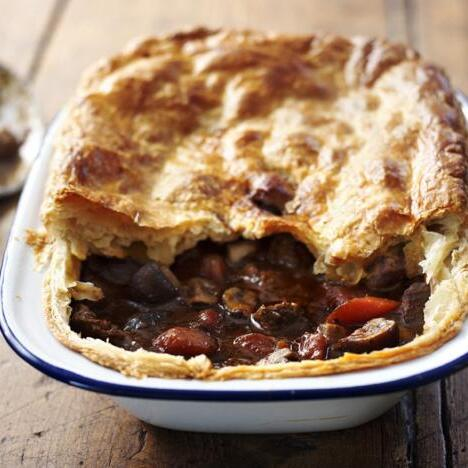

Projects
Recipes
Contact
Steak & Ale Pie

Good meat, good beer and good pastry – it’s clear why this steak and ale pie is a winner.
Serves 5 | Takes 180 mins
Original recipe:
https://www.bbc.co.uk/food/recipes/how_to_cook_steak_and_15585
main
dairy
meat
Ingredients
225g plain flour, plus extra for rolling out
½ tsp fine salt
250g unsalted butter, cold but not rock hard (or half butter, half lard)
150ml ice-cold water
1 free-range egg, beaten, to glaze
1kg braising steak, cut into matchbox-sized pieces
3 tbsp plain flour
3 tbsp olive oil
300ml brown ale
2 garlic cloves, roughly chopped
2 onions, roughly chopped
250g carrots, roughly chopped
2 sticks celery, roughly chopped
1 bay leaf
Handful fresh thyme sprigs
300ml good-quality beef stock
1 tbsp tomato purée
1 tbsp balsamic vinegar
500g chestnut or white mushrooms, halved or quartered if large
Knob of butter
Salt and freshly ground black pepper
Method
For the pastry, sift the flour and salt into a large mixing bowl, then put into the fridge for a few minutes to chill.
Cut the butter into small cubes. Stir into the bowl until each piece is well coated with flour. Pour in the water, then use a knife to bring everything together to a rough dough.
Gather the dough, squash into a fat, flat sausage, wrap in cling film and chill for 15 minutes.
Roll out the pastry to about 1cm thick and three times as long as it is wide. Fold the bottom third up, then the top third down, to make a block. Turn the dough so the open edge is facing right. Press the edges together. Roll out and fold again, repeating four times in all. Chill the finished pastry for an hour, or ideally overnight, before using.
For the filling, mix the beef with the flour and some salt and pepper. Shake in a food bag to coat.
Heat a tablespoon of oil in a large casserole, then brown half the beef for about 10 minutes. Transfer to a bowl, deglaze the pan with a splash of ale or water, and add to the bowl. Repeat with the remaining beef. Set aside.
Add the final spoon of oil to the pan and heat gently. Add the garlic, onions, carrots, celery and herbs and fry for a few minutes until softened.
Put the beef back in the pan. Pour in the stock and ale, then add the tomato purée and balsamic vinegar. Add more stock or water if needed to cover the meat. Bring to the boil, then cover and simmer for 1–1½ hours until the beef is almost tender and the sauce has thickened. Set aside to cool.
Melt the butter in a frying pan, add the mushrooms, season, and fry over high heat for 5 minutes until golden. Mix with the cooled pie filling and add to the pie dish.
Preheat the oven to 200C/Fan 180C/Gas 6. Roll out the pastry to the thickness of two £1 coins and wide enough to cover the pie dish. Brush the edge of the dish with water or beaten egg. Cut the pastry to fit, lay on top, and press down gently to seal. Pattern the edge with a knife, cut a couple of slits in the top, and brush with beaten egg. Chill for 10 minutes, then bake for 30 minutes until golden and bubbling.